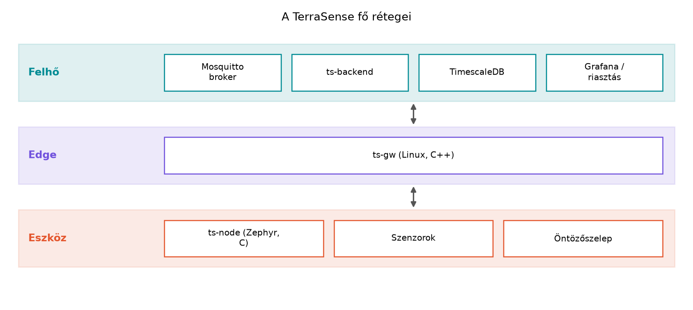
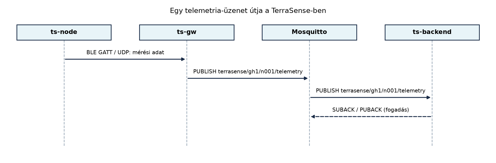
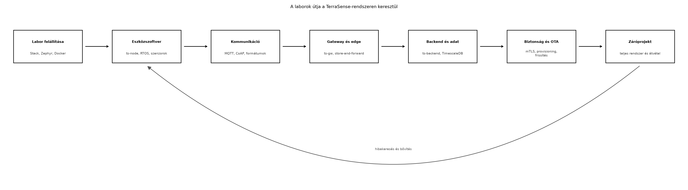

A TerraSense mintarendszer azért épül fel fokozatosan a könyv során,
hogy ne „big bang” módon kelljen egyszerre megérteni az eszközt, a
gatewayt és a felhőt. Ebben az alfejezetben rögzítjük a komponensek
nevét, felelősségét, a köztük lévő interfészeket és a laborok térképét.
Ez a térkép stabil hivatkozási alap lesz: amikor egy későbbi
alfejezetben a ts-node, a ts-gw vagy a
ts-backend neve előkerül, mindig erre az architektúrára
hivatkozunk.
Tegyük fel, hogy egy üvegházban (site=gh1) több
szenzorcsomópontot helyezünk el. Az egyik csomópont
(node_id=n001) hőmérsékletet, páratartalmat és
talajnedvességet mér, valamint egy öntözőszelepet vezérel. A csomópont
akkumulátorról működik, ezért nem akarunk rá teljes Linuxot tenni, és
nem akarjuk közvetlenül az internetre kötni. Ugyanakkor az üzemeltetőnek
egy böngészős felületen látnia kell az adatokat, és parancsot kell
tudnia küldeni a szelep nyitására.
Ebből a hétköznapi helyzetből három, egymástól markánsan eltérő szoftverkörnyezet rajzolódik ki:
A TerraSense pontosan ezt a hármas határt teszi taníthatóvá. A cél nem egy „okos kütyü” bemutatása, hanem egy olyan referenciarendszer, amelyben minden réteg kódja, konfigurációja és hibakezelése a saját fejezetében tárgyalható, miközben a rétegek együtt is működnek.
Definíció. A TerraSense egy
üvegház-monitorozó és öntözésvezérlő IoT-mintarendszer, amelyben a
ts-node nevű szenzorcsomópontok érzékelnek és beavatkoznak,
a ts-gw nevű gateway protokollfordítást és pufferezést
végez, a Mosquitto broker üzenetközvetítőként köti össze az
eszközoldalt a backenddel, a ts-backend pedig tárolja,
feldolgozza és REST API-n keresztül kiszolgálja az adatokat.
Az architektúra a klasszikus eszköz–edge–felhő rétegmodellt követi:
ts-node, szenzorok,
szelep.ts-gw, opcionálisan helyi
szűrés, offline puffer.
Az ábra fentről lefelé mutatja az adat útját a felhasználó felől az eszköz felé, illetve lentről felfelé a telemetria útját. A nyilak iránya szándékosan mindkét irányú kommunikációt jelez, mert egy IoT-rendszerben a megfigyelés mellett a vezérlés is elsőrendű követelmény.
Az alábbi táblázat a rendszer komponenseit, a könyv során használt technológiáját és a szomszédos komponensek felé mutatott interfészeit foglalja össze.
| Komponens | Technológia | Fő felelősség | Bemeneti interfész | Kimeneti interfész |
|---|---|---|---|---|
ts-node |
Zephyr RTOS, C | mérés, helyi vezérlés, telemetria | emulált szenzor; parancs MQTT/UDP felől | telemetria; szelep állapot |
ts-gw |
Linux, C++17/20, CMake | BLE/UDP → MQTT protokollfordítás, offline puffer | BLE GATT vagy UDP | MQTT |
Mosquitto |
Eclipse Mosquitto, MQTT 5/3.1.1 | topic-alapú üzenetközvetítés | MQTT publish/subscribe | MQTT publish/subscribe |
ts-backend |
Java 21, Spring Boot, Maven | ingest, REST API, eszközárnyék, parancsok | MQTT subscribe; REST | SQL; REST; MQTT parancs |
TimescaleDB |
PostgreSQL 16 + TimescaleDB | idősoros tárolás, lekérdezés, megőrzés | SQL | SQL |
Grafana |
Grafana | dashboard, riasztás | TimescaleDB | böngésző, értesítés |
A ts-node az eszközréteg mintakomponense. Nem „általános
Zephyr demó”, hanem a TerraSense egy konkrét csomópontja: három fizikai
mennyiséget mér, egy digitális kimenetet vezérel, és a rendszer közös
topic-konvencióját használja. A szenzorokat szimulációban emuláljuk,
hogy a laborok hardver nélkül is futtathatók legyenek.
A ts-gw az edge-réteg. Feladata kettős: egyrészt a helyi
rádiós protokollt (valós hardveren BLE GATT, szimulációban UDP) MQTT-vé
fordítja, másrészt akkor is megőrzi az adatokat, ha a felhő felé
átmenetileg nincs kapcsolat. Ezzel a gateway nem egyszerű vezeték, hanem
a rendelkezésre állás és a hibatűrés egyik fontos komponense.
A Mosquitto a rendszer üzenetgerince. A broker nem végez
üzleti logikát, hanem topicok alapján irányítja az üzeneteket. A
TerraSense-ben a broker minden komponens számára az MQTT-csatlakozási
pont; még akkor is ezt használjuk, ha a gyártói rendszerekben néha
közvetlen REST vagy AMQP is szerepel.
A ts-backend a felhőoldal alkalmazási belépési pontja. Ő
iratkozik fel a telemetria-topicokra, validálja a bejövő adatokat,
idempotensen tárol, és REST API-t kínál a megjelenítő rétegnek. A
backend tartja nyilván az eszközárnyékot is, vagyis azt a digitális
képet, amely a kívánt és a jelentett állapotot összeveti.
A TimescaleDB relációs adatbázisra épülő idősoros
tároló. Azért választjuk, mert a TerraSense-adatok természetes kulcsa az
eszköz és az idő, és a későbbi lekérdezések túlnyomórészt időablakokra,
aggregátumokra és megőrzési szabályokra épülnek.
A Grafana a megjelenítő és riasztási réteg. Közvetlenül
a TimescaleDB-t olvassa, így a dashboard nem a backend REST API-ján
keresztül megy, ami a laborokban is jól mutatja a rétegek közötti
munkamegosztást.
A TerraSense központi kommunikációs mintája a publish/subscribe MQTT-modell. Az eszközoldal üzenetei topicokra érkeznek, a backend feliratkozik ezekre, a parancsok pedig a másik irányban haladnak. A REST API csak ott jelenik meg, ahol a felhasználói vagy üzemeltetői kliens kérdez le adatot vagy küld parancsot a backendnek.

Az ábra szándékosan leegyszerűsített. A ts-gw a helyi
kapcsolat felől érkező adatcsomagot MQTT-üzenetté alakítja, és a
brokernek küldi. A broker az aktuális feliratkozások alapján továbbítja
a ts-backend felé. A visszafelé haladó PUBACK itt csak a
broker és a backend közötti nyugtázást jelzi; az MQTT QoS részleteit a
MQTT QoS, munkamenetek, retain, Last Will és MQTT
5 alfejezet tárgyalja.
A vezérlési irány hasonló, de fordított: a backend parancsot publikál
a cmd topicra, a ts-gw továbbítja a
csomópontnak, a ts-node pedig az eredményt a
cmd/result topicra teszi. A parancsok és a nyugtázás pontos
szerződését a Parancsok és konfiguráció lefelé:
kézbesítés, nyugtázás, időkorlát alfejezetben dolgozzuk ki.
A TerraSense minden csomópontja két hierarchikus azonosítót kap:
site: egy fizikai helyszín, például
üvegház, gh1.node: az adott helyszínen belüli
csomópont, például n001.A teljes eszközazonosító a laborokban gh1/n001, de az
üzenetekben az alábbi három mező mindig szerepel:
node_id: a csomópont azonosítója, "n001"
formátumban;seq: monoton növekvő üzenetszám, amely újraindulás után
is egyértelmű sorrendet segít;ts: az esemény időpontja UTC szerint, epoch
ezredmásodpercben.A MQTT-topicok alapja a következő séma:
terrasense/<site>/<node>/telemetry
terrasense/<site>/<node>/state
terrasense/<site>/<node>/cmd
terrasense/<site>/<node>/cmd/result
terrasense/<site>/<node>/statusA telemetry a rendszeres mérési adatokat hordozza. A
state a csomópont jelentett állapotát, például a szelep
aktuális helyzetét. A cmd a backend felől érkező parancs, a
cmd/result pedig a végrehajtás eredménye. A
status retained üzenet és Last Will segítségével jelzi a
csomópont jelenlétét.
Továbbvitt eredmény. Ez a komponensnév- és topic-konvenció alapozza meg a MQTT: publish/subscribe, broker, topicok, a A ts-gw szolgáltatás C++-ban: protokollfordítás MQTT-re, a Az IoT-backend felépítése: ingest, tárolás, API, alkalmazások és a Záróprojekt: a teljes TerraSense rendszer összeállítása és átvétele alfejezeteket. A későbbi alfejezetek ezt a sémát használják; ha módosításra lesz szükség, azt új alfejezetben indokoljuk.
A könyv elsődleges laborcélja Linux host. Ennek előnye, hogy a teljes
rendszer felépíthető hardver nélkül, Docker-konténerekkel és a Zephyr
native_sim futtatókörnyezetével.
Szimulált komponensek:
ts-node szenzorai: emulált hőmérséklet-,
páratartalom- és talajnedvesség-forrás;ts-node és a ts-gw közötti
rádiókapcsolat: UDP-csomagok;state topicra írt
emulált állapot.Opcionális valós hardveres kiterjesztés:
ts-node és a ts-gw
között;A native_sim időzítése és energiafelhasználása nem
hardverhű. Ezért minden mérési vagy fogyasztási állítást a későbbi
alfejezetekben kifejezetten illusztratívnak vagy forrásból származónak
jelölünk.
A laborok a rendszer térképén haladnak végig, és minden rész egy-egy réteget vagy metszetet épít meg.

A térkép nem azt jelenti, hogy minden labor pontosan egy komponenst
érint. Például a MQTT a gyakorlatban: Zephyr-kliens
és Mosquitto labor egyszerre használja a ts-node
kliensét és a Mosquitto brokert. A záróprojektben pedig minden korábbi
komponenst egyetlen futtatható rendszerbe integrálunk.
A TerraSense laborjaiban a komponenseket úgy kezeljük, mintha külön csapatok szállítanák őket, de közös szerződések mentén dolgoznának. A szerződés három pillére:
site,
node, seq, ts.Ezt a három pillért minden labor a ~/iot-labor/iNNN/
munkakönyvtárban úgy valósítja meg, hogy a későbbi alfejezet
visszakereshető fájlnevekkel és döntésekkel dolgozhasson.
A rendszer nem „előre tökéletes”. A könyv szándékosan épít be valós fejlesztési helyzeteket: sémaverziót kell bevezetni, QoS-t kell választani, idempotenst kell készíteni az ingest elé, és a gatewaynek offline puffert kell biztosítania. Az architektúra célja nem az, hogy minden kérdésre azonnal választ adjon, hanem hogy a döntések következményeit egy működő rendszerben lehessen tesztelni.
Az architektúra megértését a következőkkel ellenőrizhetjük:
gh1/n001 csomópont parancs-eredménye melyik topicra
kerül.Tipikus hiba, hogy valaki az MQTT-topicot REST-végpontnak nézi, vagy
a REST API-t közvetlenül az eszköz felé akarja kitenni. A TerraSense-ben
a REST a backend és a felhasználói kliensek közötti interfész, az eszköz
pedig MQTT-topicokon keresztül kommunikál. Az is gyakori félreértés,
hogy a seq az eszköz újraindulása után is feltétlenül
folytonos lesz; ezt a kérdést az időkezelés és a tárolási idempotencia
tárgyalja majd.
gh1 üvegházban működő n001 és
n002 csomópontokra. Milyen új topic kellene akkor, ha
nemcsak szelepet, hanem ventilátort is vezérelnénk?~/iot-labor/i003/ munkakönyvtárat, és készíts benne egy
terrasense_topics.md fájlt, amely a fenti topic-konvenciót
rögzíti.site
is szerepeljen az üzenetben, ne csak a topicban. Milyen előnyt ad ez a
broker nélküli hibanaplóban?terrasense/gh1/n001/telemetry
terrasense/gh1/n001/state
terrasense/gh1/n001/cmd
terrasense/gh1/n001/cmd/result
terrasense/gh1/n001/status
terrasense/gh1/n002/telemetry
terrasense/gh1/n002/state
terrasense/gh1/n002/cmd
terrasense/gh1/n002/cmd/result
terrasense/gh1/n002/statusHa ventilátort is vezérelnénk, a cmd topic maradhat, de
az üzenetben szereplő cmd_id vagy actuator
mező egyértelműsítené a célpontot. Alternatíva lehet a
terrasense/<site>/<node>/cmd/<actuator>
altopic, de ezt a parancsok alfejezetében akkor vezetnénk be, ha valóban
szét akarjuk választani a különböző aktuátorokat. A tananyag induló
konvenciója szerint a cmd marad közös, az üzenetben
hordozott mező dönt a célról.
mkdir -p ~/iot-labor/i003 && cd ~/iot-labor/i003A terrasense_topics.md tartalma:
# TerraSense topic-konvenció
terrasense/<site>/<node>/telemetry
terrasense/<site>/<node>/state
terrasense/<site>/<node>/cmd
terrasense/<site>/<node>/cmd/result
terrasense/<site>/<node>/statussite, akkor a
ts-gw vagy a backend naplója akkor is beazonosítja az
adatot, ha a topic nem elérhető, vagy ha egy hibakeresési eszköz
közvetlenül az üzenet-törzset rögzíti. Ez segít a hibás
gateway-konfiguráció vagy a topic-átírás okozta problémák
felderítésében, mert az üzenet és a topic keresztellenőrizhető.A TerraSense három fő rétegre tagolódik: a ts-node
(Zephyr, C) az eszköz, a ts-gw (Linux, C++) az edge, a
Mosquitto, ts-backend (Spring Boot),
TimescaleDB és Grafana alkotja a felhőt. A
rendszer MQTT-gerincre épül; az eszközoldal topicokra publikál, a
backend feliratkozik, a parancsok pedig a cmd topicon
haladnak lefelé. A topicok alapja
terrasense/<site>/<node>/..., a telemetria, az
állapot, a parancs, a parancs-eredmény és a jelenlét számára. A laborok
Linux hoston futnak, native_sim és Docker segítségével;
valós hardver opcionális. A továbbvitt eredmények a komponensnevek, az
azonosítók és a topic-konvenció: ezeket használják a kommunikációs,
gateway-, backend- és záróprojekt-alfejezetek. Az architektúra a későbbi
döntések stabil kerete.
Ez az alfejezet a könyv saját TerraSense-koncepcióját vezeti be,
ezért nem épül külső webes forrásokra. A komponensek konkrét verzióit a
Laborkörnyezet és a kapcsolódó
technológiai alfejezetek rögzítik. A Zephyr native_sim
hardverhűségének korlátját a Energiamodell és az
elemélettartam kiszámítása alfejezetben is jelezni kell. A
biztonsági protokollok, a Mosquitto-verzió és a Spring Boot-verzió
ellenőrzési igénye a megfelelő alfejezetekben jelenik meg; itt csak
architektúra-szintű elnevezéseket rögzítettünk.